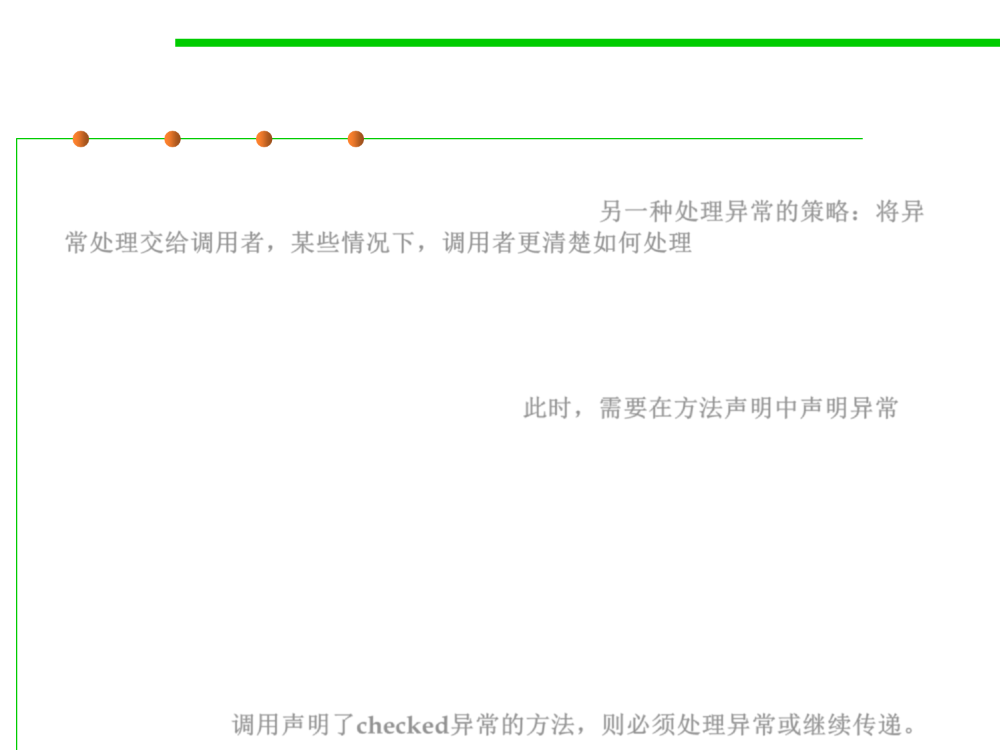

7.2 Error and Exception Handling
Pass the exception on to the caller
▪ Another choice to handle the exceptions: do nothing at all and
simply pass the exception on to the caller. 另一种处理异常的策略：将异
常处理交给调用者，某些情况下，调用者更清楚如何处理。
– Let the caller of the read method worry about it!
– Might be the best choice (prefer more correctness to robustness).
▪ If we take that approach, then we have to advertise the fact that the
method may throw an IOException. 此时，需要在方法声明中声明异常
public void read(String filename) throws IOException {
InputStream in = new FileInputStream(filename);
int b;
while ((b = in.read()) != -1) {
process input
}
}
▪ The compiler strictly enforces the throws specifiers. If you call a
method that throws a checked exception, you must either handle it
or pass it on. 调用声明了checked异常的方法，则必须处理异常或继续传递。